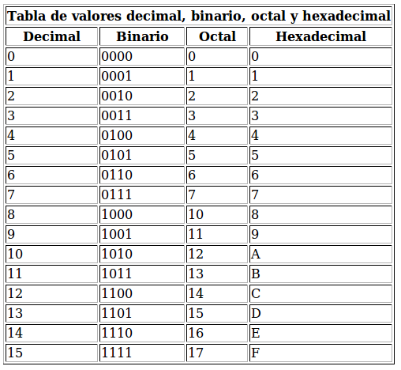

HTML las mesas están diseñadas para mantener los datos en forma de cuadro, de esta forma:
|
||||||||||||||||||||
El código de fuente de este cuadro es similar al siguiente:
<table> <tr><th colspan="2">Resumen del Crecimiento de la Web (*)</th></tr> <tr><th>Mes</th><th>Número de Sitios Web</th></tr> <tr><td>6/93</td><td>130</td></tr> <tr><td>12/93</td><td>623</td></tr> <tr><td>6/94</td><td>2,738</td></tr> <tr><td>12/94</td><td>10,022</td></tr> <tr><td>6/95</td><td>23,500</td></tr> <tr><td>1/96</td><td>100,000</td></tr> <tr><td>6/96</td><td>230,000 (est)</td></tr> <tr><td>1/97</td><td>650,000 (est)</td></tr> </table> |
Aquí están las etiquetas que se utilizan con las tablas:
<tabla></tabla><tabla>en el inicio de la mesa y
</tabla> en la parte final de la misma.<tr></tr><th></th><td></td>th). Cada fila
de la tabla debería tener el mismo número de ellos, a menos que
colspan="x" es utilizado como un atributo dentro de
la etiqueta apertura para indicar que se extiende por más de una
columna.Una vez más, copia pagina_basica.html a un nuevo archivo
llamado tabla.html y establezca el título y un nivel superior a
la partida Cuadro
.Usa lo que has aprendido en esta lección para
producir la siguiente tabla (**) en el nuevo documento:

(*) Del sitio Web Matthew K. Gray 's @ http://www.mit.edu/people/mkgray/net/web-growth-summary.html (**) El cuadro que se muestra aquí es una imagen de modo que la fuente no esta disponible y el ejercicio es más difícil ;-)